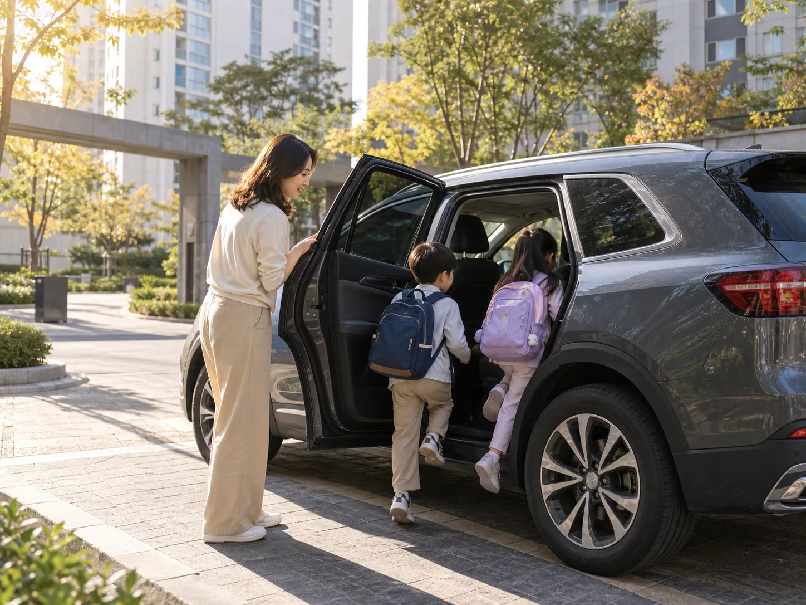
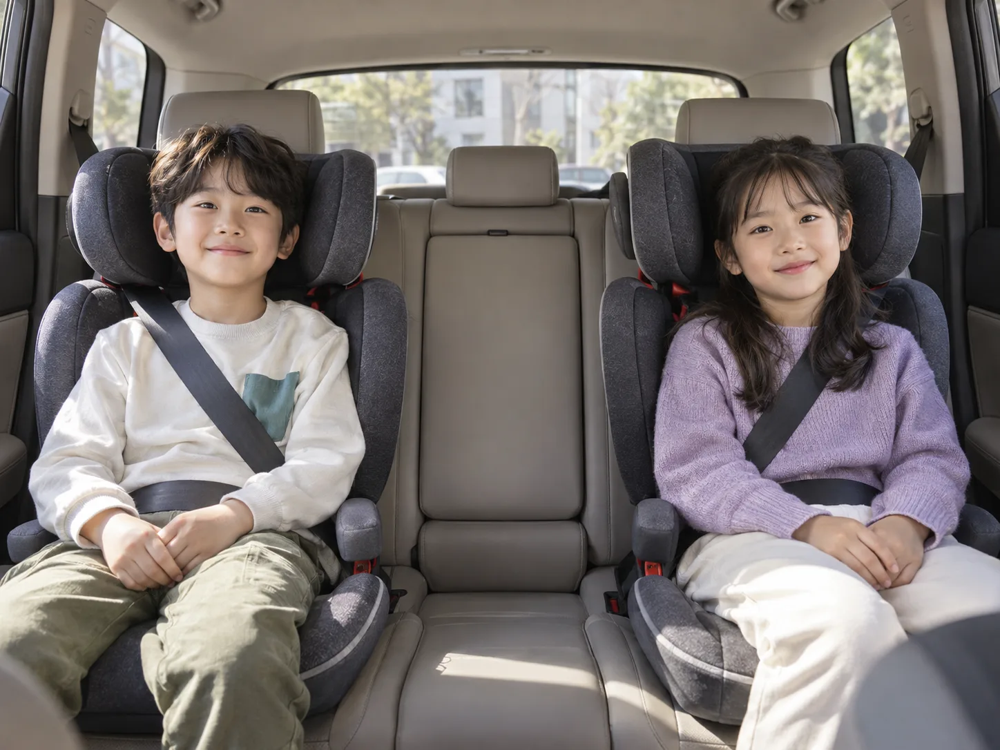
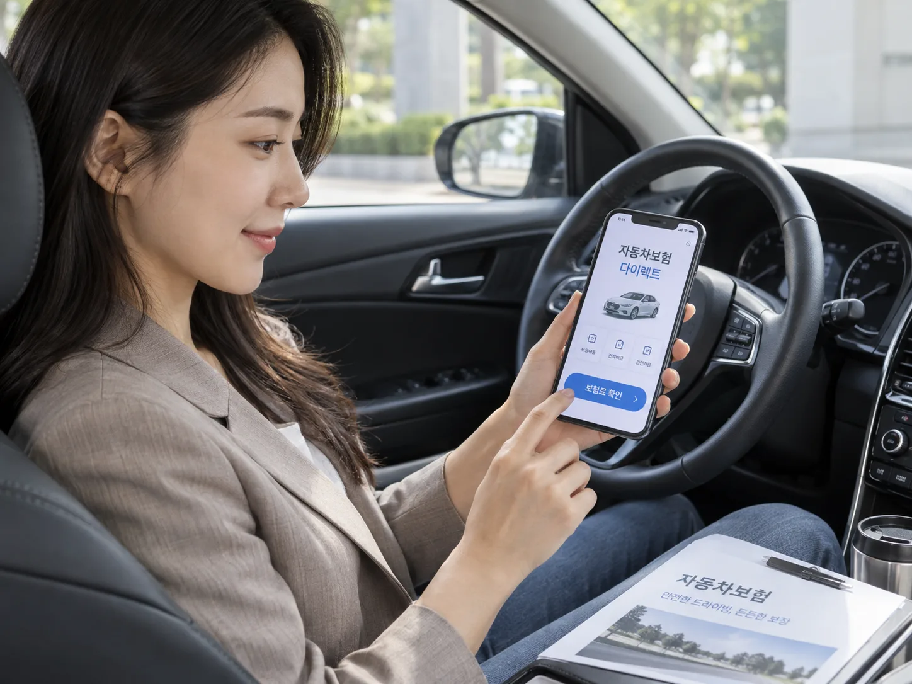

▲ 학부모들끼리 돌아가며 아이를 태우는 '자녀 카풀'은 법적으로 어디까지 안전할까 ⓒ 카프리즘
매일 아침 아파트 단지 앞, 학부모 서너 명이 돌아가며 아이들을 태워 학교나 학원으로 실어 나르는 '자녀 카풀'은 이제 흔한 풍경이다. 그런데 이 카풀 중 접촉사고라도 나면 분위기는 순식간에 달라진다. "그냥 호의로 태워준 건데 내가 다 책임지는 건가", "기름값 몇 번 받았다고 문제가 되나" 같은 질문이 쏟아진다. 학부모들이 실제로 궁금해하는 질문 7가지를, 법조문과 판례를 근거로 정리했다.
Q1. 무상으로 돌아가며 태워주는데, 사고 나면 누가 책임지나?
결론부터 말하면 '운전한 사람'과 '차량의 운행자'가 책임진다. 돈을 받지 않았다는 사실은 책임을 면제해주지 않는다. 자동차손해배상보장법 제3조는 "자기를 위하여 자동차를 운행하는 자는 그 운행으로 다른 사람을 사망하게 하거나 부상하게 한 경우에는 그 손해를 배상할 책임을 진다"고 규정한다. 무상이냐 유상이냐는 이 조문 어디에도 나오지 않는다.
더 중요한 건 단서 조항이다. 이 법 제3조 단서는 운전자가 면책되는 경우를 두 가지로 제한하는데, 동승한 '승객'이 다친 경우에는 그 승객 본인의 고의나 자살행위로 인한 사고였다는 것을 증명하지 못하는 한 운전자는 책임을 면할 수 없다. 일반 보행자·상대 차량 운전자에게 적용되는 "내가 주의의무를 다했다"는 식의 무과실 항변이, 동승자인 아이에게는 사실상 통하지 않는다는 뜻이다. 카풀 차량에 타고 있던 다른 집 아이가 다쳤다면, 운전한 학부모는 원칙적으로 그 손해를 배상할 책임을 지게 된다.
📍 핵심 정리
자동차손해배상보장법은 자동차 사고에 대해 운전자·소유자(운행자)에게 무과실에 가까운 강한 책임을 지운다. "돈을 안 받았으니 책임도 없다"는 생각은 법적으로 성립하지 않는다.

▲ 동승한 아이가 다쳤다면, 운전자는 그 아이의 고의·자살행위가 아닌 이상 책임을 면하기 어렵다 ⓒ 카프리즘
Q2. "호의로 태워준 건데" — 그래도 배상액이 줄어들진 않나?
원칙적으로는 줄어들지 않지만, 예외적으로 감액되는 경우는 있다. 대법원은 일관되게 "호의동승 그 자체만으로는 운행자의 책임이 면제되거나 동승자의 과실로 인정되지 않는다"는 입장을 유지해왔다(대법원 2021. 3. 25. 선고 2019다208687 판결 등). 다만 운행 목적, 동승자와 운전자의 인적 관계, 동승을 요구한 경위와 적극성 등을 종합했을 때 일반 교통사고와 똑같은 책임을 지우는 것이 신의칙이나 형평의 원칙에 비추어 '매우 불합리'하다고 인정될 경우에 한해 법원이 배상액을 감경할 수 있다고 본다(대법원 1994. 11. 25. 선고 94다32917 판결).
학부모 카풀에 이 기준을 대입하면, 단순히 "돌아가며 품앗이로 태워줬다"는 사정만으로는 감액 사유가 되기 어렵다. 자녀를 동승시킨 학부모가 적극적으로 부탁해서 태운 것인지, 운전자가 먼저 제안한 것인지 같은 구체적 정황이 있어야 법원이 감액 여부를 판단한다. 실무적으로는 보험사 간 과실 협의·소송 단계에서 다투어지는 영역이지, 카풀 운전자가 스스로 "난 호의로 태웠으니 책임 없다"고 주장해서 해결되는 문제가 아니다.
Q3. 기름값만 받아도 불법인가?
법 조문상으로는 '기름값도 유상에 포함'된다. 여객자동차 운수사업법 제81조는 사업용이 아닌 자가용자동차를 "유상(자동차 운행에 필요한 경비를 포함한다)"으로 운송에 제공해서는 안 된다고 명시한다. 법이 굳이 괄호로 '운행에 필요한 경비'까지 유상의 범위에 넣은 이유는, "돈이 아니라 기름값만 받았다"는 식의 항변을 원천적으로 막기 위해서다. 즉 순수한 현금 대가가 아니라도, 아이 한 명당 얼마씩 기름값을 걷는 방식의 카풀은 이 조문상 '유상운송'에 해당할 소지가 있다.
다만 이 조문에는 예외(단서)가 있다. 아래 Q4에서 다루는 출·퇴근시간대 카풀 특례에 해당하면, 기름값을 나눠 내도 위법하지 않다. 문제는 등하교 시간대나 학원 픽업 시간대가 이 특례 시간대와 정확히 맞아떨어지지 않는 경우가 많다는 점이다.
Q4. 출퇴근 시간이 아니면 유상 카풀은 무조건 안 되나?
여객자동차 운수사업법 제81조 단서 제1호는 "출·퇴근시간대(오전 7시부터 오전 9시까지 및 오후 6시부터 오후 8시까지를 말하며, 토요일·일요일 및 공휴일인 경우는 제외한다) 승용자동차를 함께 타는 경우"에는 예외적으로 유상 제공·알선을 허용한다고 규정한다. 즉 평일 오전 7~9시, 오후 6~8시 사이에 이뤄지는 카풀이라면 기름값이나 소정의 비용을 주고받아도 이 법 위반이 아니다.
| 구분 | 내용 |
|---|---|
| 원칙 | 자가용자동차를 유상(운행경비 포함)으로 운송에 제공·임대·알선 금지 |
| 예외 시간대 | 평일(토·일·공휴일 제외) 오전 7~9시, 오후 6~8시 승용차 함께 타기 |
| 그 외 예외 | 천재지변·긴급수송·교육목적 등으로 시장·군수·구청장 허가를 받은 경우 |
| 위반 시 벌칙(제90조) | 2년 이하 징역 또는 2천만원 이하 벌금 |
문제는 등하교·학원 픽업 시간이 이 시간대를 벗어나는 경우가 많다는 것이다. 초등학교 하교 시각은 대개 오후 1~3시대, 학원 픽업은 오후 4~6시대에 몰려 있어 '오후 6~8시' 특례 시간대와 겹치지 않는 경우가 흔하다. 이 시간대를 벗어나 정기적으로 비용을 걷는 카풀을 운영한다면, 조문상으로는 위법 소지가 생긴다. 다만 실제로는 이런 '학부모 자율 카풀'까지 단속·처벌한 사례가 흔하진 않지만, 법 조문 자체가 시간대를 명확히 한정하고 있다는 점은 알아둘 필요가 있다.
✅ 완전 무상이면 시간대와 무관하게 문제없다
제81조는 '유상' 운송을 금지하는 조문이다. 돈이나 경비를 전혀 주고받지 않는 순수 호의 카풀이라면 시간대에 관계없이 이 법의 규제 대상이 아니다. 다만 Q1·Q2에서 다룬 '무과실에 가까운 손해배상 책임'은 무상이든 유상이든 똑같이 적용된다.
▲ 카풀 일정과 비용 분담 방식을 미리 정해두는 것만으로도 사고 시 분쟁을 크게 줄일 수 있다 ⓒ 카프리즘
Q5. 내 보험으로 다른 집 아이가 다치면 보상되나?
보상된다. 자동차보험의 대인배상Ⅰ·Ⅱ는 사고 상대방뿐 아니라 동승자도 보상 대상에 포함한다. 앞서 살펴본 자동차손해배상보장법 제3조에 따라 운전자(운행자)는 동승한 아이에 대해 배상 책임을 지고, 이 책임을 실제로 이행하는 창구가 자동차보험이다. 동승자가 유상으로 탔는지 무상으로 탔는지는 대인배상 보상 여부 자체에는 영향을 주지 않는다 — 일반적인 개인용 자동차보험에 가입돼 있다면, 카풀 중 동승한 다른 집 아이가 다쳤을 때도 대인배상으로 처리된다.
다만 유의할 점이 있다. 보험업계는 영리 목적으로 요금을 받고 반복적으로 차량을 운행하는 '유상운송'에 대해서는 별도 특약(유상운송특약) 없이는 보상을 제한할 수 있다는 입장을 취한다. 배달대행이나 카풀앱을 통한 상시적 유상 운송이 대표적 사례다. 그러나 학부모 카풀처럼 여객자동차법상 허용되는 출퇴근시간대 카풀이나 순수 호의 동승은 이 '영리 목적 유상운송'과는 성격이 다르므로, 일반 개인용 자동차보험의 대인배상으로 처리되는 것이 원칙이다.
Q6. 카풀 전용 보험 특약이 따로 있나?
2026년 9월 현재, 국내 손해보험사들이 '카풀 전용 특약'이라는 이름의 별도 상품을 판매하고 있지는 않다. 자동차보험 특약은 마일리지 할인 특약, 블랙박스 특약, 자녀할인 특약처럼 대개 '보험료 할인'이나 '운전자 범위 확대'를 목적으로 하며, 학부모 카풀을 위한 전용 보장 상품은 확인되지 않는다.
대신 실질적으로 카풀 중 사고를 대비하는 방법은 다음과 같다.
- 대인배상Ⅱ(무한)를 가입해 동승자 치료비·배상 한도를 넉넉히 확보한다 — 기본 대인배상Ⅰ(책임보험)만으로는 한도가 낮아 실제 손해를 다 못 덮을 수 있다
- 자기신체사고(자손) 또는 자동차상해 특약은 원칙적으로 '내 차'에 탄 운전자 본인과 가족 중심으로 설계된 경우가 많으므로, 매번 다른 아이가 동승하는 카풀 구조에서는 대인배상이 핵심 방어선이 된다는 점을 이해해 둔다
- 운전자 범위 특약(가족한정·1인한정 등)에 가입돼 있다면, 카풀 순번상 본인이 직접 운전하는 날짜에만 자신의 보험이 적용된다는 점을 확인한다
📍 보험사·약관마다 문구가 다르다
대인배상의 동승자 보상 범위나 유상운송 관련 면책 조항은 보험사·상품마다 세부 표현이 다를 수 있다. 카풀을 정기적으로 하는 학부모라면 가입한 보험사 다이렉트 앱이나 고객센터에서 "동승자 대인배상 보장 범위"를 직접 확인해두는 것이 가장 확실하다.

▲ 카풀 전용 특약은 없지만, 대인배상 한도와 동승자 보장 범위는 가입한 보험사에서 미리 확인할 수 있다 ⓒ 카프리즘
Q7. 그래도 사고를 피하려면 — 학부모들이 미리 챙겨야 할 것
법적 책임 구조를 알았다고 사고가 안 나는 건 아니다. 실제로 카풀을 운영하는 학부모들 사이에서는 다음과 같은 점을 미리 정해두는 것이 분쟁을 줄이는 데 도움이 된다.
- 운전 순번과 시간대를 문서(단체 채팅방 공지 등)로 남겨둔다 — 사고 발생 시 누가 운전자였는지, 몇 명이 동승했는지를 명확히 할 수 있다
- 비용을 걷는다면 출·퇴근시간대(평일 07~09시·18~20시)에 맞춰 운영하거나, 아예 순번제 무상 카풀로 운영해 여객자동차법 저촉 소지를 없앤다
- 운전하는 학부모의 대인배상Ⅱ 한도를 무한으로 유지하고, 다른 참여 학부모들도 서로의 보험 가입 상태를 대략 공유해둔다
- 카시트·안전벨트 착용을 의무화한다 — 도로교통법상 13세 미만 어린이는 카시트 등 유아보호용 장구 없이는 뒷좌석이라도 안전띠를 반드시 착용해야 한다
학부모 카풀은 법이 막아서는 제도가 아니다. 다만 '무상이니까 책임 없다', '기름값 정도는 괜찮겠지'라는 막연한 생각과 실제 법 조문 사이에는 간극이 있다. 그 간극을 미리 알아두는 것이 사고 이후의 갈등을 줄이는 가장 확실한 방법이다.